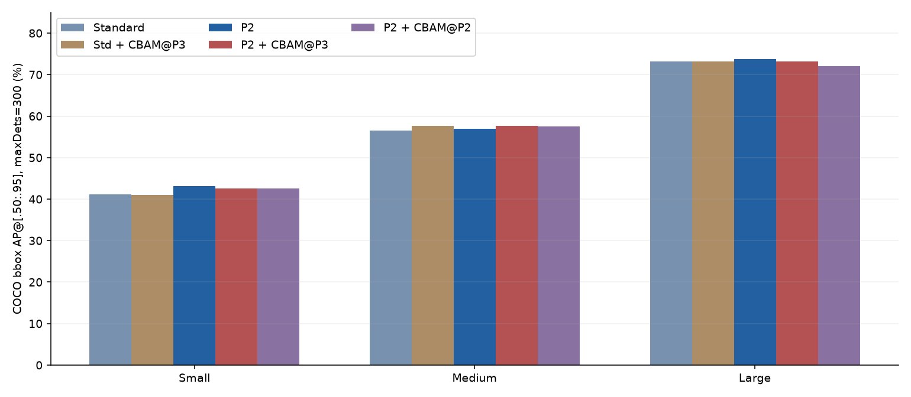
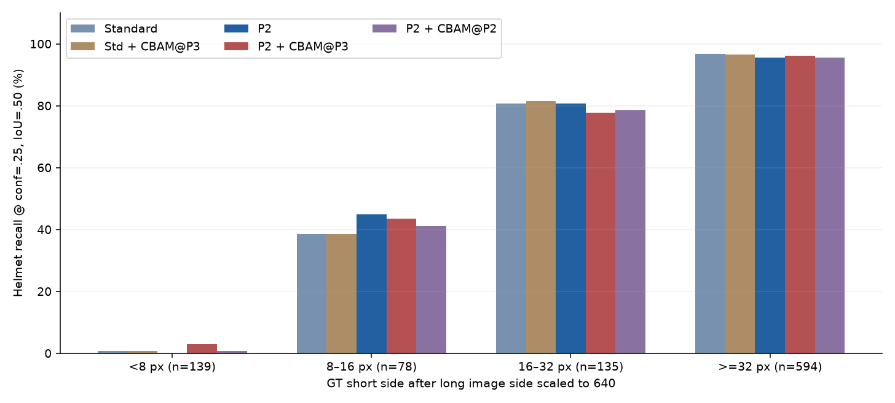
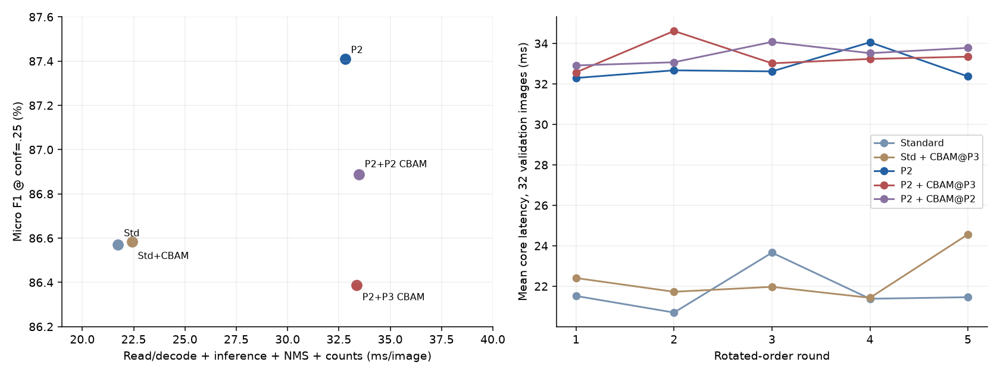

五组结构实验收尾：尺寸、固定工作点与完整本地推理耗时
2026-10-28。五组既有best.pt，无训练、无测试阈值搜索、无检查点重选。
结论：保留P2、conf=0.25作为当前单模型推荐。 P2在本批小目标AP与固定工作点F1上优于标准版。P2＋P3 CBAM有局部召回收益和原GPU测试AP的小幅收益，但固定工作点新增未匹配预测较多，尚不值得替换P2。CPU速度接近，不把微小耗时差或抖动解释为更稳定的网络。
1. 完整保留五组训练与原测试结果
| 模型 | 最佳轮次 | 参数量 | 验证mAP50–95 | 原GPU测试mAP50–95 |
| 标准版 | 40 | 3011238 | 60.24% | 57.57% |
| 标准版+P3-CBAM | 46 | 3011916 | 60.45% | 57.56% |
| 原始P2 | 48 | 2926824 | 61.30% | 58.18% |
| P2+P3-CBAM | 39 | 2927502 | 60.96% | 58.41% |
| P2+P2-CBAM | 44 | 2927084 | 60.80% | 57.53% |
原GPU表使用Ultralytics8.4.164、RTX3060、FP16、batch4；最佳轮次先由验证集选定。以下新尺寸AP使用同一批模型的CPU FP32、batch1预测及COCOeval，指标实现和数值精度不同，不能拿两种口径的总AP直接计算提升。
2. 按原图面积统计AP与固定阈值召回
AP使用官方pycocotools2.0.11的COCO bbox评价：IoU=.50:.05:.95、101点插值、maxDets=300，候选conf=.001。小/中/大按原图标注框面积分层；与32×32、96×96比较，不按整张图片尺寸，也不是缩放后的框尺寸。沿用COCOeval默认面积与忽略规则，名称为COCO式bbox AP@300，而非默认AP@100。
| 模型 | APsmall | APmedium | APlarge | Rsmall@.25 | Rmedium@.25 | Rlarge@.25 |
| 标准版 | 41.18% | 56.58% | 73.18% | 82.19% | 88.99% | 95.42% |
| 标准版+P3-CBAM | 40.97% | 57.69% | 73.15% | 82.19% | 89.47% | 95.64% |
| 原始P2 | 43.12% | 56.97% | 73.73% | 82.82% | 89.15% | 95.31% |
| P2+P3-CBAM | 42.58% | 57.71% | 73.16% | 83.59% | 89.41% | 95.20% |
| P2+P2-CBAM | 42.54% | 57.46% | 72.02% | 82.53% | 89.20% | 94.53% |
固定Recall按所有GT先作同类一对一匹配，再按GT尺寸分组，互斥计数小2072、中1908、大895，总4875。此处用半开区间<32²、[32²,96²)、≥96²；COCO AP官方区间上下界包含端点。本数据端点计数见JSON核验，不把两种区间规则隐去。未匹配预测没有GT尺寸，因此不编造“按真实尺寸分组的FP或Precision”。COCO AP会按其官方忽略规则处理区间外GT和预测。
本批恰好落在32²/96²面积端点的标注均为0，因此两种区间计数在这里一致，见尺寸分母核验。候选conf=.001时达到300框上限的图数依模型为9/7/17/24/23，可能截断低分候选，完整保留上限记录；conf=.25没有图达到上限，单图GT最多124个。
P2相对标准版，APsmall增加 1.941个百分点。这支持“本次小目标整体受益”，不意味着所有微小目标都受益。

安全帽类别单独看
| 模型 | 小安全帽AP50–95 | 小安全帽Recall@.25 | 匹配/标注 |
| 标准版 | 37.47% | 57.27% | 126/220 |
| 标准版+P3-CBAM | 37.13% | 57.73% | 127/220 |
| 原始P2 | 40.03% | 59.09% | 130/220 |
| P2+P3-CBAM | 38.78% | 57.27% | 126/220 |
| P2+P2-CBAM | 38.68% | 57.73% | 127/220 |
P2的小安全帽AP提高 2.561个百分点；固定0.25下小安全帽匹配126→130，增加4个。这个改进量不大，不能说已经解决远距离安全帽问题。
输入尺度下的微小安全帽
定义：标注框短边 ×640/原图最长边；这是微小目标代理，没有真实拍摄距离标签。小于16px累计组与前两组重叠，不和其他组再次相加。
| 模型 | <8px /139 | 8–16px /78 | 16–32px /135 | ≥32px /594 | <16px累计 /217 |
| 标准版 | 1 (0.72%) | 30 (38.46%) | 109 (80.74%) | 575 (96.80%) | 31 (14.29%) |
| 标准版+P3-CBAM | 1 (0.72%) | 30 (38.46%) | 110 (81.48%) | 573 (96.46%) | 31 (14.29%) |
| 原始P2 | 0 (0.00%) | 35 (44.87%) | 109 (80.74%) | 568 (95.62%) | 35 (16.13%) |
| P2+P3-CBAM | 4 (2.88%) | 34 (43.59%) | 105 (77.78%) | 571 (96.13%) | 38 (17.51%) |
| P2+P2-CBAM | 1 (0.72%) | 32 (41.03%) | 106 (78.52%) | 567 (95.45%) | 33 (15.21%) |
小于8px的139个安全帽：标准版匹配1个、P2为0个，P2＋P3 CBAM为4个。极小目标仍是明显短板。不能只挑8–16px组的改善、忽略更小组的负结果。

3. 同一conf=0.25的误检、漏检与F1
五组均为640、rect=True、batch1、CPU FP32、NMS IoU=.7、max_det300。以score降序、同类别一对一IoU≥.5匹配；这里是微平均P/R/F1，不是库在各自最佳F1处报告的P/R，也不是mAP。FP指相对现有标签的未匹配预测，可能包含漏标，未经人工确认不一律称真实误检。
| 模型 | TP | FP未匹配预测 | FN漏检 | Precision | Recall | F1 |
| 标准版 | 4255 | 700 | 620 | 85.87% | 87.28% | 86.57% |
| 标准版+P3-CBAM | 4266 | 713 | 609 | 85.68% | 87.51% | 86.58% |
| 原始P2 | 4270 | 625 | 605 | 87.23% | 87.59% | 87.41% |
| P2+P3-CBAM | 4290 | 767 | 585 | 84.83% | 88.00% | 86.39% |
| P2+P2-CBAM | 4258 | 668 | 617 | 86.44% | 87.34% | 86.89% |
| 模型 | 戴帽TP | 戴帽FP | 戴帽FN | 戴帽Precision | 戴帽Recall | 戴帽F1 |
| 标准版 | 715 | 97 | 231 | 88.05% | 75.58% | 81.34% |
| 标准版+P3-CBAM | 714 | 78 | 232 | 90.15% | 75.48% | 82.16% |
| 原始P2 | 712 | 67 | 234 | 91.40% | 75.26% | 82.55% |
| P2+P3-CBAM | 714 | 112 | 232 | 86.44% | 75.48% | 80.59% |
| P2+P2-CBAM | 706 | 83 | 240 | 89.48% | 74.63% | 81.38% |
P2＋P3 CBAM相对P2：TP +20、FN −20、FP +142，F1 -1.023个百分点；安全帽仅多匹配2个，却增加45个未匹配安全帽预测。它可以多找回一些目标，但当前工作点的误检代价更大。
P2＋P3 CBAM−P2的F1差值，2000次配对风险组重采样95%区间为 [-1.635, -0.404]个百分点。本批508张测试图恰好对应508个检索组，数值上等价于按图重采样；未知同源关系可能仍存在。它只表示这批图、这些固定权重的样本不确定性，不是训练多随机种子显著性。
4. 完整本地图片处理耗时
环境：macOS-26.6-arm64-arm-64bit-Mach-O / arm64，torch2.14.0，CPU FP32，实际torch8线程、interop1、OpenCV1线程。32张按文件名均匀选取的验证图，每模型预热5次，5轮轮换模型顺序，共每模型160次、五模型800次。每轮图像顺序一致并固定随机种子。
| 模型 | 核心均值ms | 核心中位ms | 核心P95ms | 含绘图编码均值ms | 含绘图编码P95ms | 轮均值CV |
| 标准版 | 21.74 | 19.92 | 31.18 | 58.49 | 122.17 | 4.61% |
| 标准版+P3-CBAM | 22.42 | 20.22 | 34.98 | 60.35 | 122.90 | 4.99% |
| 原始P2 | 32.80 | 31.11 | 45.47 | 69.49 | 134.46 | 1.96% |
| P2+P3-CBAM | 33.36 | 31.50 | 46.30 | 69.95 | 133.68 | 2.05% |
| P2+P2-CBAM | 33.47 | 31.61 | 46.84 | 70.57 | 134.20 | 1.29% |
核心：读图/解码→RGB→预处理→网络→NMS→框取回与计数。含绘图编码：核心再加画框和内存PNG编码（压缩3）。均不含权重加载、网页/网络、文件输出；文件缓存已热。预热针对predict，绘图第一次使用的初始化仍可能进入第一轮。原图分辨率、目标数量和后台负载会影响分布；保留逐次时间和五轮均值。
P2与P2＋P3 CBAM核心均值为32.80/33.36ms，只差约1.7%。速度大致相当，不据此宣称P2显著更快或更稳定。两组含绘图编码的轮均值抖动也很小；这与训练稳定性是两回事。
这是Mac本地处理路径的计时，不是Windows CUDA实测，不是浏览器端到端响应，也不能直接换算成系统实时吞吐率。原GPU评估器的forward时间仅保留作历史参考。模型构造计时受导入及文件缓存先后影响，原始记录保留但不据此排冷启动速度名次。

5. 最终选择与负结果
- 当前推荐P2单模型，conf=0.25。 它的验证mAP50–95最高，本轮固定工作点总体F1也最高；小目标和小安全帽AP优于标准版。
- 标准版更快，若设备预算更严格可作为轻量备选；不能省略P2约1.5倍核心CPU耗时的代价。
- P2＋P3 CBAM保留为结构实验：原GPU测试mAP50–95高0.228个百分点，但验证低0.339个百分点、固定阈值F1下降，微小安全帽仅补回少数。
- 标准版＋P3 CBAM与旧P2位置CBAM也完整保留；不删负结果，不把换接入位置后的实验合并成一个成功故事。
- 这是文档中的推荐；应用已使用原P2登记，本次没有自动替换权重、改阈值或改检测功能。
6. 实验限制
1. 五组均seed=0、单次训练。50个epoch不是50次独立重复；配对图像bootstrap也不能代替多种子。
2. 两个新P3 CBAM均64通道、678参数且初始注意力参数一致；标准版位于22接15，P2版位于28接21。P2配对历史非CBAM初始化核验一致，标准版配对则不完全一致，因此不宣称严格控制全部初始变量的二因素交互证据。
3. 旧P2分支CBAM为32通道、260参数，与P3位置组同时改变位置和规模，不能称纯位置单因素实验。
4. 测试集已被多次查看和使用；此前五组总分在本轮前已知。新协议在本轮分层、固定点与计时前冻结，不称最初全盲预注册。没有在测试上搜索阈值，但模型推荐仍属于事后综合判断。
5. 已检索跨分区关联隔离不等于排除所有未知场景关系。PartA教室来源全部训练用，现有测试不证明新教室泛化。
6. 15张外部图没有完整真值；difficult按普通目标处理；没有实测目标距离，因此“微小头部”不等同于“远距离”。
7. 固定0.25比较的是共同工作点，不代表每个模型经过独立验证集校准后的最佳性能；当前不为扭转测试结论继续搜索参数。
8. CPU速度只在本机小批验证图测得，后台负载未控制；不能推断CUDA效率、实际现场响应或多种子训练稳定性。
7. 复现与证据
先准备协议清单对应的数据和五组完整训练目录，权重SHA256见协议。这些新训练权重仍只在本地，不把历史公开权重当作本轮模型。
python -m pip install --target error_analysis/final_five_model_evaluation_2026-10-28/metrics_dependencies --no-deps pycocotools==2.0.11
python -B tools/final_evaluation/tests.py
python -B tools/final_evaluation/evaluate.py prepare
python -B tools/final_evaluation/evaluate.py infer
python -B tools/final_evaluation/evaluate.py score
python -B tools/final_evaluation/evaluate.py benchmark
python -B tools/final_evaluation/evaluate.py verify
python -B tools/final_evaluation/build_report.py
有已冻结结果的目录不会覆盖；如复现新一轮，先使用独立项目副本/新的输出目录，不删改本轮证据。COCO工具隔离安装，不升级现有训练环境。
五组数值 · 汇总CSV · 尺寸AP与Recall · 微小安全帽 · 逐图计数 · 计时摘要 · 800次原始计时 · 置信区间 · 模型选择 · 核验 · 250行训练记录 · 源码
已核验全部7507张图片/标签、五组训练参数/CSV/权重和评价源码；10个合成测试覆盖空预测、错类、重复框、尺寸忽略、区间边界、完美预测与微平均计数。无优化器步骤。原训练、原GPU报告和模型登记保留。